Fixing Broken Windows
Broken Window Theory and how we established visual systems at scale
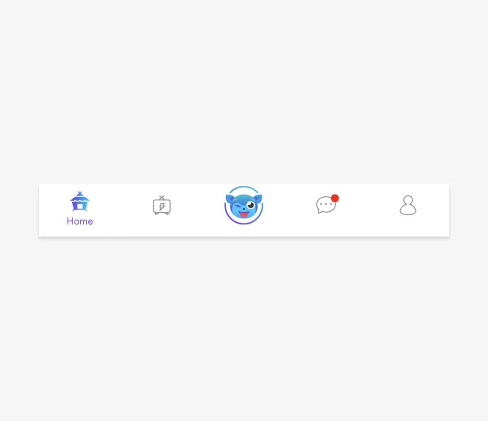
In 1982, James Wilson and George Kelling described what became known as the Broken Window Theory: visible signs of disorder, like a broken window left unfixed, tell people nobody cares about a place. That sense of neglect makes worse behavior easier. Fix the small things quickly and a neighborhood feels orderly and safe again.
Digital products work the same way. Unclear buttons, broken links, and inconsistent design elements are small on their own, but together they make a product feel neglected and the experience worse.
Why small fixes matter
- User satisfaction. Small inefficiencies compound for people who repeat the same actions daily. Fixing them is often worth more than a new feature.
- Usability and trust. Fixing minor issues shows we care about quality, and users see their feedback acted on.
- Business impact. Fewer obstacles means people engage more and stay longer.
Finding the broken windows
At Kumu we used three sources to surface problems users had learned to live with:
- App store reviews. We went through iOS and Google Play reviews for recurring complaints like "why is this so hard to find?" or "I keep accidentally tapping the wrong button."
- User research synthesis. We looked back through research sessions for hesitation, mis-taps, and workarounds that people never mentioned but clearly did.
- Heuristic audit. We reviewed the app against consistency, visibility, error prevention, and accessibility. This caught contrast failures and inconsistent buttons that no single user would report.
A design system as the benchmark
The fixes were guided by a design system we created for Kumu, unified across iOS and Android, covering color, typography, iconography, and component behavior. Anywhere the live product deviated from it was a broken window.
- Icon consistency. The system specified one icon style with rules for outline vs filled states. The app used several icon sets.
- Button standards. The system made Kumu Blue (#499CE4) the primary action color, with no gradients. The app had buttons in many colors and gradient styles.
- Contrast requirements. The system set minimum contrast ratios for text and interactive elements. Several screens failed them.
This turned the audit from subjective ("this feels inconsistent") to objective ("this doesn't match the spec"), and made prioritization easier: we were asking to meet agreed standards, not arguing taste.
The fixes, before and after
The highest-impact fixes targeted three things: fewer "Where do I find X?" complaints, better legibility and accessibility, and less confusion around primary actions.
Navigation icons
Feedback and usability testing showed users didn't recognize our menu icons and found content by trial and error. We made the menu labels always visible. Navigation-related complaints went down after launch.
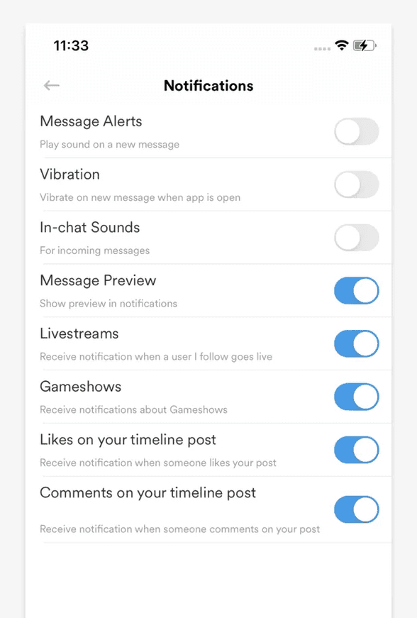
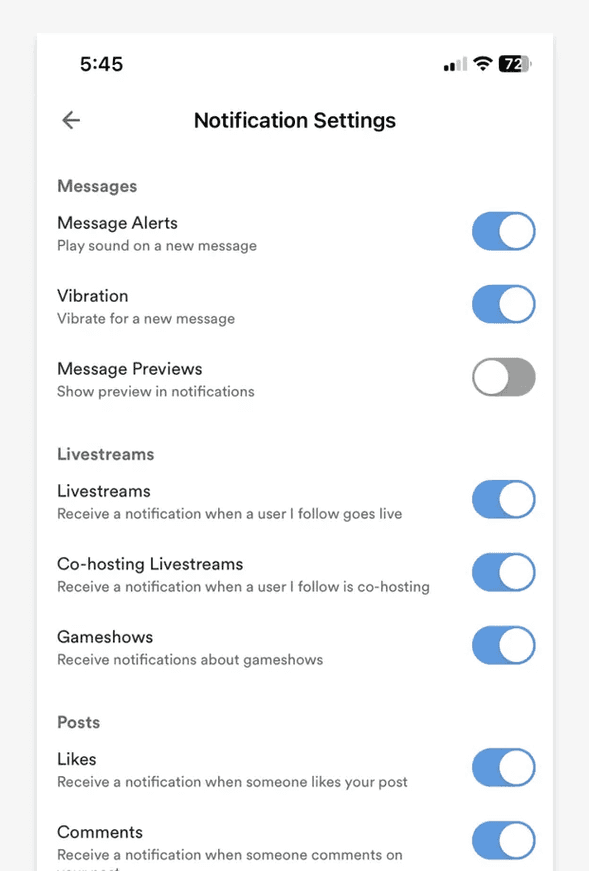
Contrast and legibility
Users struggled to read low-contrast text and mistook unselected toggles for disabled ones because the grays were too light. We removed tiny, low-contrast text and moved to darker grays for both text and toggles. Core UI elements now pass WCAG AA contrast.
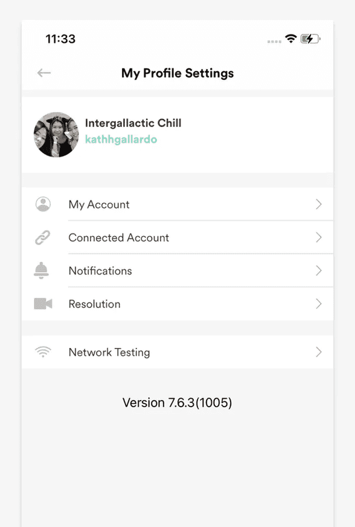
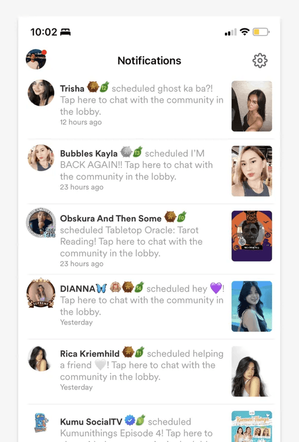
Notifications
Users often called Kumu's notifications spammy. They could change them, but Notification Settings was buried under Profile Settings. We added a shortcut at the top-right of the Notifications page, so preferences were always one tap away. "How do I turn off notifications?" complaints went down.
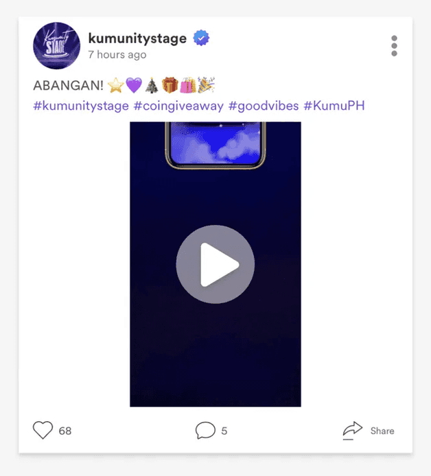
Video posts
Video posts in the feed had large white margins, and users had to tap to play them. We resized videos to the full screen width and set them to auto-play when scrolled into view. Watch time went up.
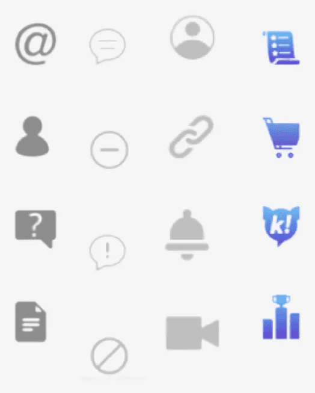
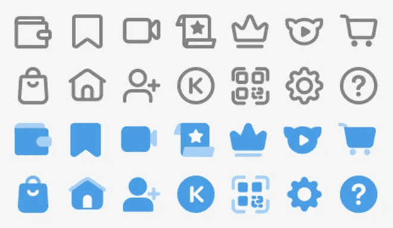
Icon consistency
Kumu mixed icon styles across the interface, which made it feel inconsistent and hurt the brand. We redrew icons in one style: outline for unselected, filled for selected. Updating just the most visible ones, like navigation, was an 80/20 win.
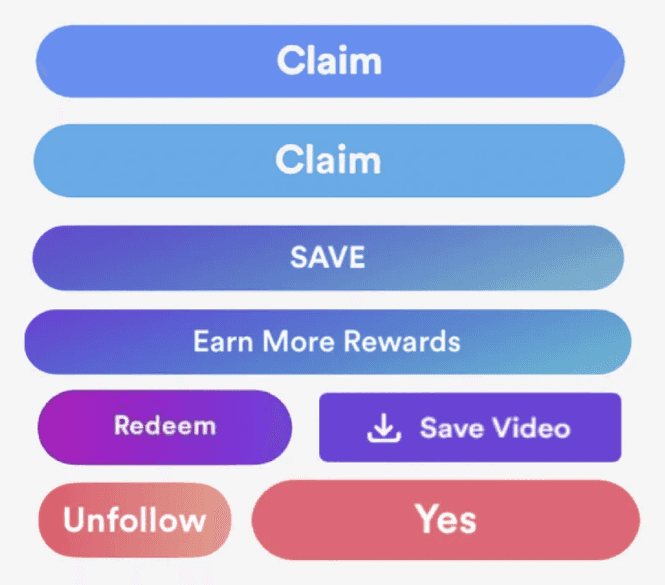
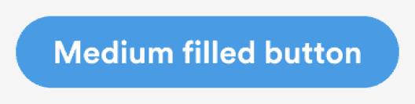
Button consistency
The primary button looked different all over the app. We made Kumu Blue (#499CE4) the only primary button color and dropped the gradients. A consistent, recognizable primary button reduced users' cognitive load.
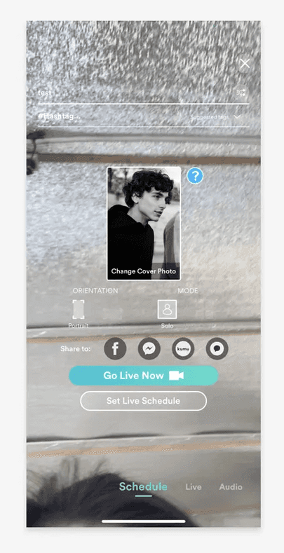
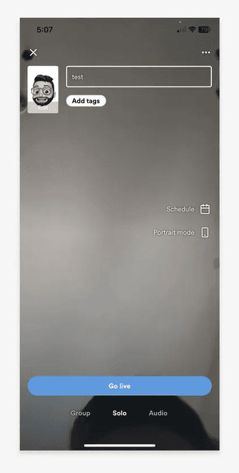
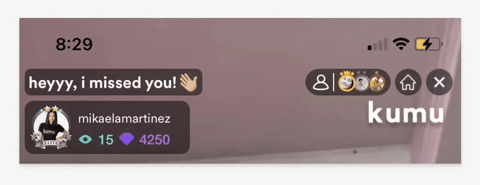
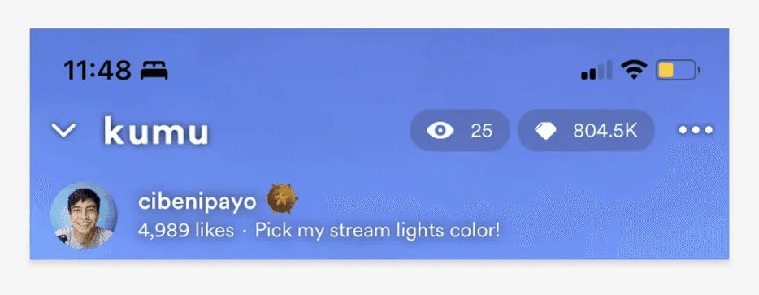
Livestream controls: Minimize and Close
Minimize and Close sat side by side in the livestream interface, so users often closed a stream when they meant to minimize it. We moved Minimize to the far left and Close into a kebab menu, so closing always takes two taps. Accidental stream exits went down.
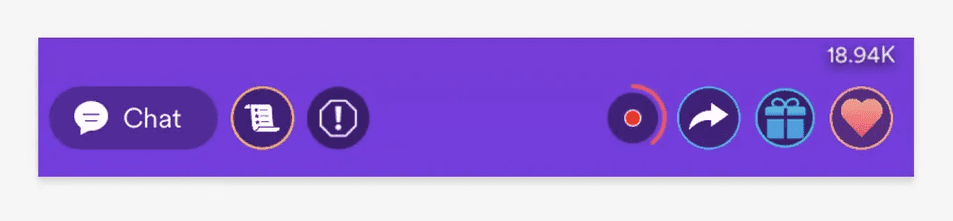
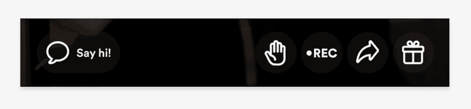
Livestream controls: Like and Gift
Like and Gift were also side by side, so users spamming likes would accidentally send gifts, which cost money. We enlarged the icon buttons, removed Like, and let viewers double-tap anywhere instead. Accidental gift sends and the refund requests they caused went down.
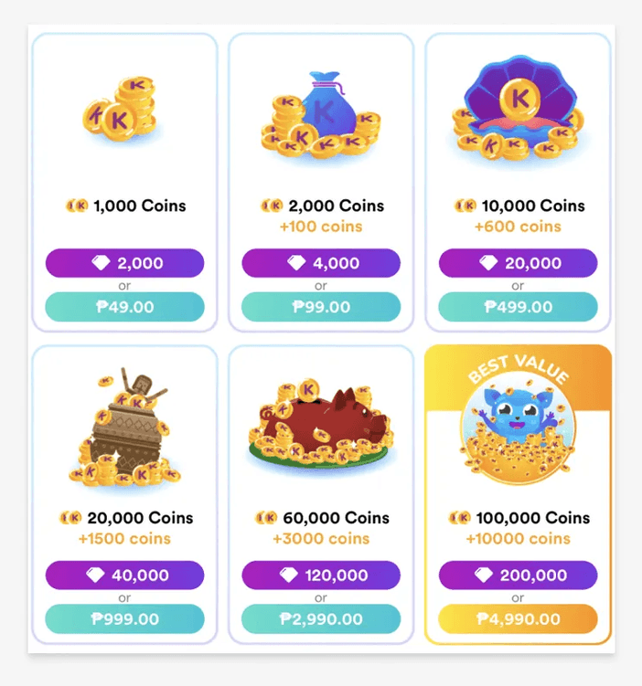
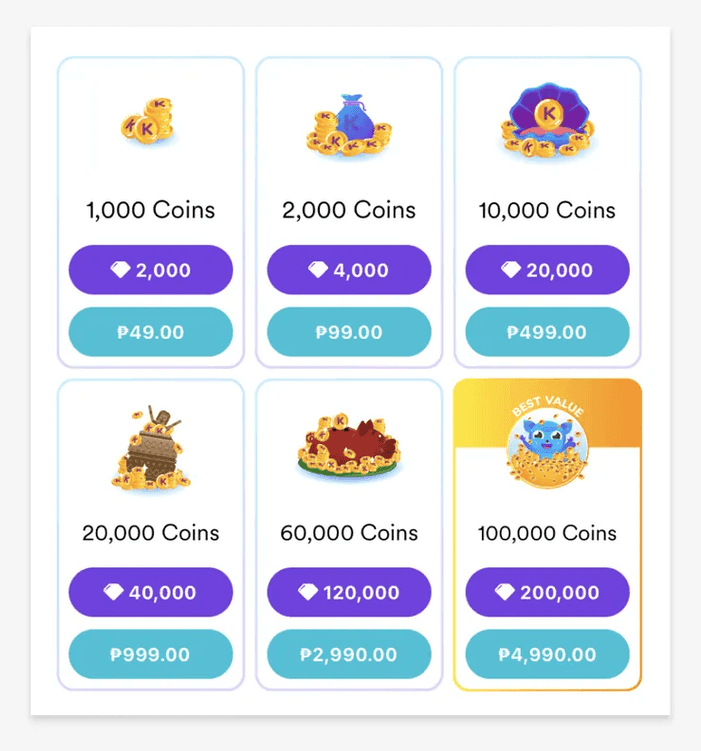
Gradient removal
The UI used brand-color gradients that often gave poor contrast behind white text. We replaced them with solid brand colors that contrast well, and made buttons larger.
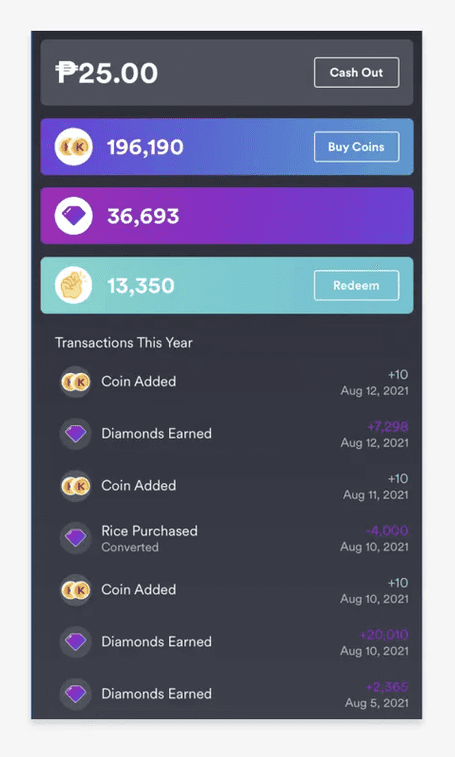

Wallet dark mode
The Wallet was the only dark-mode screen in the app, and no one knew why. Its brand-colored copy was also hard to read. We moved it to light mode, used solid colors instead of gradients, and kept brand colors out of the text.

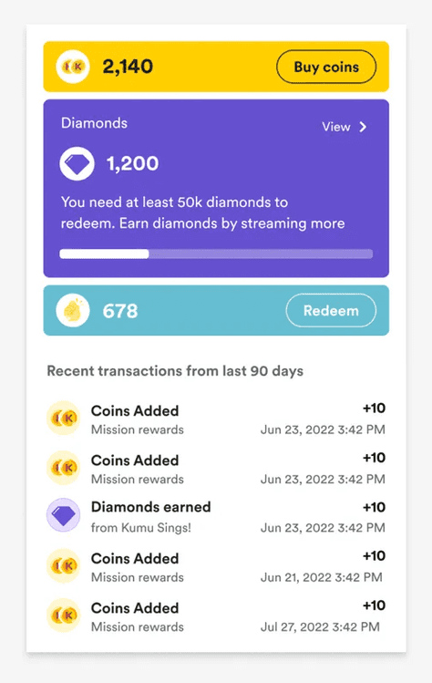
None of these were big projects, but together they made the app easier to use and showed users we were listening.
Key learnings
- Small inefficiencies almost always go unreported. Users get used to friction and stop complaining, so you have to go looking: reviews, research sessions, audits.
- Accessibility improvements benefit everyone. Better contrast and larger touch targets help all users, and framing them that way made them easier to prioritize.
- A design system makes quality objective. Without one, quality discussions are debates about taste. "Does this match the spec?" is easier to prioritize than "I think this looks better."
- Quality work needs a business case. Changes like these can look like vanity work. Reframing them as "reducing user friction" and tying each fix to real complaints and observed behavior got them prioritized.
- Creating organizational change is harder than fixing UI. The fixes took a few weeks to design and build. Getting leadership to prioritize quality over new features took sustained effort: presenting user feedback, showing the value of consistency, and showing results over time.